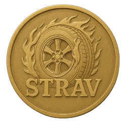

0
🕹️ ¡Ey, piloto del asfalto!
¿Sabes como se juega esta aventura? Te lo explico... 🚀
¿Cómo se juega?: 📋
🧠 Responde las preguntas.
✅ Si aciertas: avanzas y ganas una moneda.
❌ Si fallas: retrocedes... y no hay moneda (¡ay, ese bache de la vida!).
🎯 Hay 10 preguntas, 10 chances de brillar.
💡 Consejo de oro:
“Con cada respuesta te acercas a ser un maestro de los Stravos... o al menos a no olvidar el SOAT 😅”
✨ ¡Demuestra que eres más veloz que los trámites!